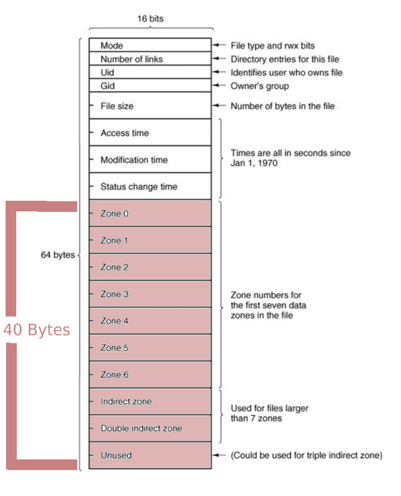

Immediate Files Problem Statement
What are Immediate Files ?
Immediate files are basically storage for small files where the data is stored directly in the inode, without the need to traverse pointers to external blocks. Let's first review how file systems work in Minix:
Each regular Minix file is represented by an inode that stores metadata about a file (such as file size or the user id of file owner), as well as a number of disk blocks that store the file's content. To find the disk blocks storing the file content, an inode also stores pointers (in the inode's i_zone array). These pointers can either point directly to a disk block storing data, or to a block that stores a list of additional pointers to data blocks (indirect blocks). But for really small files, say 1 or 2 byte files, then a complete disk block still needs to be allocated. In Minix, these blocks are generally called Zones, but it's the same thing. Because each block or zone has a minimum size of 4KB, this clearly wastes a lot of space.
To make storage more efficient for small files, and to reduce internal fragmentation, we can use immediate files. An immediate file is a file whose data is not stored in a data block, but directly inside the inode itself. An inode in Minix is 64 bytes long, and 40 bytes are used to hold pointers to data blocks. For immediate files, you can clearly use those 40 bytes to store the file contents instead of pointers.
Let's take a look at Inode structue of MFS(Minix Filesystem).

In the above picture the colored portions indicate the space used to save disk block pointers in inode structure. Our job is to utilize this space and implement immediate files.
Immediate files was proposed by Andrew S. Tanenbaum and Spaje J. Mullender in 1984.
Problem Definition
- Implement support for immediate files in Minix Filesystem.
- An Immediate file is created only when we pass an open flag O_CREATI (you will have to define this open flag constant).
- by default we use open system calls to create a regular file:
open("filename", O_CREAT , 0666); - now for creating immediate file we will define a new constant O_CREATI and open system call with parameter O_CREATI should create an immediate file:
open("filename", O_CREATI, 0666);
- by default we use open system calls to create a regular file:
- All other file operations (open, delete, read, write ...) should work on immediate files.
- When size of immediate file reaches 32 Bytes the filesystem should return an error.